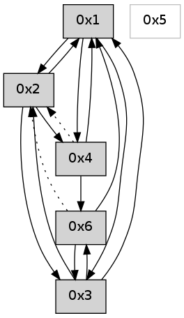

>> << IDX [start] -100 -25 -5 +0 +5 +25 +100 [600.02947998]
 Previous packets
----------------------------------------------------------------------
595.108402 beacon01(adaf) #0 coord=01,02,05,03,04,06 cycle=432.0ms assoc
-- color-indic=0 64 7d 55
595.118363 beacon02(adaf) #0 coord=01,02,05,03,04,06 cycle=432.0ms assoc 64 2c aa
595.128364 beacon05(adaf) #0 coord=01,02,05,03,04,06 cycle=432.0ms assoc 64 8a 80
595.138364 beacon03(adaf) #0 coord=01,02,05,03,04,06 cycle=432.0ms assoc 64 16 a4
595.148363 beacon04(adaf) #0 coord=01,02,05,03,04,06 cycle=432.0ms assoc 64 b0 8e
595.158363 beacon06(adaf) #0 coord=01,02,05,03,04,06 cycle=432.0ms assoc 64 c4 92
595.170050 [Hello(2): seq=890 sym=6,4,1,3 sysInfo= stat=6:1,0,0,0/4:0,0,0,0/1:10,0,0,0/3:10,0,0,0]
----------------------------------------------------------------------
595.600509 beacon01(adaf) #0 coord=01,02,05,03,04,06 cycle=432.0ms assoc
-- color-indic=0 64 31 e5
595.610471 beacon02(adaf) #0 coord=01,02,05,03,04,06 cycle=432.0ms assoc 64 60 1a
595.620470 beacon05(adaf) #0 coord=01,02,05,03,04,06 cycle=432.0ms assoc 64 c6 30
595.630470 beacon03(adaf) #0 coord=01,02,05,03,04,06 cycle=432.0ms assoc 64 5a 14
595.640473 beacon04(adaf) #0 coord=01,02,05,03,04,06 cycle=432.0ms assoc 64 fc 3e
595.650471 beacon06(adaf) #0 coord=01,02,05,03,04,06 cycle=432.0ms assoc 64 88 22
595.661586 [Hello(1): seq=295 sym=2,3,6,4 sysInfo= stat=2:6,0,0,0/3:5,0,0,0/6:2,0,0,0/4:1,0,0,0]
595.665806 [Hello(4): seq=396 sym=6,1 asym=2 sysInfo= stat=6:12,0,0,0/1:2,0,0,0/2:0,0,0,0]
----------------------------------------------------------------------
596.092617 beacon01(adaf) #0 coord=01,02,05,03,04,06 cycle=432.0ms assoc
-- color-indic=0 64 f5 8a
596.102577 beacon02(adaf) #0 coord=01,02,05,03,04,06 cycle=432.0ms assoc 64 a4 75
596.112578 beacon05(adaf) #0 coord=01,02,05,03,04,06 cycle=432.0ms assoc 64 02 5f
596.122577 beacon03(adaf) #0 coord=01,02,05,03,04,06 cycle=432.0ms assoc 64 9e 7b
596.132578 beacon04(adaf) #0 coord=01,02,05,03,04,06 cycle=432.0ms assoc 64 38 51
596.142579 beacon06(adaf) #0 coord=01,02,05,03,04,06 cycle=432.0ms assoc 64 4c 4d
596.154262 [Hello(2): seq=891 sym=6,4,1,3 sysInfo= stat=6:1,0,0,0/4:0,0,0,0/1:11,0,0,0/3:11,0,0,0]
----------------------------------------------------------------------
596.584724 beacon01(adaf) #0 coord=01,02,05,03,04,06 cycle=432.0ms assoc
-- color-indic=0 64 ab eb
596.594685 beacon02(adaf) #0 coord=01,02,05,03,04,06 cycle=432.0ms assoc 64 fa 14
596.604686 beacon05(adaf) #0 coord=01,02,05,03,04,06 cycle=432.0ms assoc 64 5c 3e
596.614685 beacon03(adaf) #0 coord=01,02,05,03,04,06 cycle=432.0ms assoc 64 c0 1a
596.624686 beacon04(adaf) #0 coord=01,02,05,03,04,06 cycle=432.0ms assoc 64 66 30
596.634686 beacon06(adaf) #0 coord=01,02,05,03,04,06 cycle=432.0ms assoc 64 12 2c
596.646353 [Hello(4): seq=397 sym=6,1 asym=2 sysInfo= stat=6:13,0,0,0/1:2,0,0,0/2:0,0,0,0]
596.656642 [Hello(1): seq=296 sym=2,3,6,4 sysInfo= stat=2:7,0,0,0/3:5,0,0,0/6:2,0,0,0/4:2,0,0,0]
----------------------------------------------------------------------
597.076832 beacon01(adaf) #0 coord=01,02,05,03,04,06 cycle=432.0ms assoc
-- color-indic=0 64 6f 84
597.086795 beacon02(adaf) #0 coord=01,02,05,03,04,06 cycle=432.0ms assoc 64 3e 7b
597.096793 beacon05(adaf) #0 coord=01,02,05,03,04,06 cycle=432.0ms assoc 64 98 51
597.106793 beacon03(adaf) #0 coord=01,02,05,03,04,06 cycle=432.0ms assoc 64 04 75
597.116794 beacon04(adaf) #0 coord=01,02,05,03,04,06 cycle=432.0ms assoc 64 a2 5f
597.126794 beacon06(adaf) #0 coord=01,02,05,03,04,06 cycle=432.0ms assoc 64 d6 43
597.138482 [Hello(2): seq=892 sym=6,4,1,3 sysInfo= stat=6:1,0,0,0/4:0,0,0,0/1:12,0,0,0/3:12,0,0,0]
----------------------------------------------------------------------
597.568939 beacon01(adaf) #0 coord=01,02,05,03,04,06 cycle=432.0ms assoc
-- color-indic=0 64 23 34
597.578903 beacon02(adaf) #0 coord=01,02,05,03,04,06 cycle=432.0ms assoc 64 72 cb
597.588901 beacon05(adaf) #0 coord=01,02,05,03,04,06 cycle=432.0ms assoc 64 d4 e1
597.598902 beacon03(adaf) #0 coord=01,02,05,03,04,06 cycle=432.0ms assoc 64 48 c5
597.608904 beacon04(adaf) #0 coord=01,02,05,03,04,06 cycle=432.0ms assoc 64 ee ef
597.618901 beacon06(adaf) #0 coord=01,02,05,03,04,06 cycle=432.0ms assoc 64 9a f3
597.630041 [Hello(1): seq=297 sym=2,3,4 sysInfo= stat=2:8,0,0,0/3:5,0,0,0/4:2,0,0,0]
597.634257 [Hello(4): seq=398 sym=6,1 asym=2 sysInfo= stat=6:14,0,0,0/1:3,0,0,0/2:0,0,0,0]
----------------------------------------------------------------------
598.061047 beacon01(adaf) #0 coord=01,02,05,03,04,06 cycle=432.0ms assoc
-- color-indic=0 64 e7 5b
598.071008 beacon02(adaf) #0 coord=01,02,05,03,04,06 cycle=432.0ms assoc 64 b6 a4
598.081008 beacon05(adaf) #0 coord=01,02,05,03,04,06 cycle=432.0ms assoc 64 10 8e
598.091010 beacon03(adaf) #0 coord=01,02,05,03,04,06 cycle=432.0ms assoc 64 8c aa
598.101008 beacon04(adaf) #0 coord=01,02,05,03,04,06 cycle=432.0ms assoc 64 2a 80
598.111011 beacon06(adaf) #0 coord=01,02,05,03,04,06 cycle=432.0ms assoc 64 5e 9c
598.122719 [Hello(2): seq=893 sym=4,1,3 sysInfo= stat=4:0,0,0,0/1:13,0,0,0/3:13,0,0,0]
----------------------------------------------------------------------
598.553154 beacon01(adaf) #0 coord=01,02,05,03,04,06 cycle=432.0ms assoc
-- color-indic=0 64 aa 5c
598.563115 beacon02(adaf) #0 coord=01,02,05,03,04,06 cycle=432.0ms assoc 64 fb a3
598.573115 beacon05(adaf) #0 coord=01,02,05,03,04,06 cycle=432.0ms assoc 64 5d 89
598.583116 beacon03(adaf) #0 coord=01,02,05,03,04,06 cycle=432.0ms assoc 64 c1 ad
598.593118 beacon04(adaf) #0 coord=01,02,05,03,04,06 cycle=432.0ms assoc 64 67 87
598.603117 beacon06(adaf) #0 coord=01,02,05,03,04,06 cycle=432.0ms assoc 64 13 9b
598.614220 [Hello(1): seq=298 sym=2,3,4 sysInfo= stat=2:9,0,0,0/3:5,0,0,0/4:3,0,0,0]
598.618472 [Hello(4): seq=399 sym=6,1 asym=2 sysInfo= stat=6:15,0,0,0/1:3,0,0,0/2:0,0,0,0]
----------------------------------------------------------------------
599.045264 beacon01(adaf) #0 coord=01,02,05,03,04,06 cycle=432.0ms assoc
-- color-indic=0 64 6e 33
599.055225 beacon02(adaf) #0 coord=01,02,05,03,04,06 cycle=432.0ms assoc 64 3f cc
599.065225 beacon05(adaf) #0 coord=01,02,05,03,04,06 cycle=432.0ms assoc 64 99 e6
599.075226 beacon03(adaf) #0 coord=01,02,05,03,04,06 cycle=432.0ms assoc 64 05 c2
599.085226 beacon04(adaf) #0 coord=01,02,05,03,04,06 cycle=432.0ms assoc 64 a3 e8
599.095226 beacon06(adaf) #0 coord=01,02,05,03,04,06 cycle=432.0ms assoc 64 d7 f4
599.106899 [Hello(2): seq=894 sym=4,1,3 sysInfo= stat=4:0,0,0,0/1:14,0,0,0/3:13,0,0,0]
----------------------------------------------------------------------
599.537371 beacon01(adaf) #0 coord=01,02,05,03,04,06 cycle=432.0ms assoc
-- color-indic=0 64 22 83
599.547331 beacon02(adaf) #0 coord=01,02,05,03,04,06 cycle=432.0ms assoc 64 73 7c
599.557332 beacon05(adaf) #0 coord=01,02,05,03,04,06 cycle=432.0ms assoc 64 d5 56
599.567333 beacon03(adaf) #0 coord=01,02,05,03,04,06 cycle=432.0ms assoc 64 49 72
599.577332 beacon04(adaf) #0 coord=01,02,05,03,04,06 cycle=432.0ms assoc 64 ef 58
599.587333 beacon06(adaf) #0 coord=01,02,05,03,04,06 cycle=432.0ms assoc 64 9b 44
599.598454 [Hello(1): seq=299 sym=2,3,4 sysInfo= stat=2:9,0,0,0/3:5,0,0,0/4:4,0,0,0]
599.602680 [Hello(4): seq=400 sym=6,1 asym=2 sysInfo= stat=6:0,0,0,0/1:3,0,0,0/2:0,0,0,0]